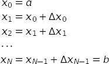
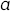
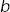
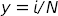
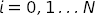
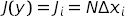
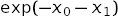

vegas Module¶
Introduction¶
The key Python objects supported by the vegas module are:
- vegas.Integrator — an object describing a multidimensional integration operator. Such objects contain information about the integration volume, and also about optimal remappings of the integration variables based upon the last integral evaluated using the object.
- vegas.AdaptiveMap — an object describing the remappings used by vegas.
- vegas.RAvg — an object describing the result of a vegas integration. vegas returns the weighted average of the integral estimates from each vegas iteration as an object of class vegas.RAvg. These are Gaussian random variables — that is, they have a mean and a standard deviation — but also contain information about the iterations vegas used in generating the result.
- vegas.RAvgArray — an array version of vegas.RAvg used when the integrand is array-valued.
These are described in detail below.
Integrator Objects¶
The central component of the vegas package is the integrator class:
- class vegas.Integrator¶
Adaptive multidimensional Monte Carlo integration.
vegas.Integrator objects make Monte Carlo estimates of multidimensional functions f(x) where x[d] is a point in the integration volume:
integ = vegas.Integrator(integration_region) result = integ(f, nitn=10, neval=10000)
The integator makes nitn estimates of the integral, each using at most neval samples of the integrand, as it adapts to the specific features of the integrand. Successive estimates (iterations) typically improve in accuracy until the integrator has fully adapted. The integrator returns the weighted average of all nitn estimates, together with an estimate of the statistical (Monte Carlo) uncertainty in that estimate of the integral. The result is an object of type RAvg (which is derived from gvar.GVar).
Integrands can be array-valued, in which case f(x) returns an array of values corresponding to different integrands. Also vegas can generate integration points in batches for integrands built from classes derived from vegas.BatchIntegrand, or integrand functions decorated by vegas.batchintegrand(). Batch integrands are typically much faster, especially if they are coded in Cython.
vegas.Integrators have a large number of parameters but the only ones that most people will care about are: the number nitn of iterations of the vegas algorithm; the maximum number neval of integrand evaluations per iteration; and the damping parameter alpha, which is used to slow down the adaptive algorithms when they would otherwise be unstable (e.g., with very peaky integrands). Setting parameter analyzer=vegas.reporter() is sometimes useful, as well, since it causes vegas to print (on sys.stdout) intermediate results from each iteration, as they are produced. This helps when each iteration takes a long time to complete (e.g., an hour) because it allows you to monitor progress as it is being made (or not).
Parameters: - map (array or vegas.AdaptiveMap
or vegas.Integrator) –
The integration region as specified by an array map[d, i] where d is the direction and i=0,1 specify the lower and upper limits of integration in direction d.
map could also be the integration map from another vegas.Integrator, or that vegas.Integrator itself. In this case the grid is copied from the existing integrator.
- nitn (positive int) – The maximum number of iterations used to adapt to the integrand and estimate its value. The default value is 10; typical values range from 10 to 20.
- neval (positive int) – The maximum number of integrand evaluations in each iteration of the vegas algorithm. Increasing neval increases the precision: statistical errors should fall at least as fast as sqrt(1./neval) and often fall much faster. The default value is 1000; real problems often require 10–1000 times more evaluations than this.
- alpha (float) – Damping parameter controlling the remapping of the integration variables as vegas adapts to the integrand. Smaller values slow adaptation, which may be desirable for difficult integrands. Small or zero alphas are also sometimes useful after the grid has adapted, to minimize fluctuations away from the optimal grid. The default value is 0.5.
- beta (float) – Damping parameter controlling the redistribution of integrand evaluations across hypercubes in the stratified sampling of the integral (over transformed variables). Smaller values limit the amount of redistribution. The theoretically optimal value is 1; setting beta=0 prevents any redistribution of evaluations. The default value is 0.75.
- adapt (bool) – Setting adapt=False prevents further adaptation by vegas. Typically this would be done after training the vegas.Integrator on an integrand, in order to stabilize further estimates of the integral. vegas uses unweighted averages to combine results from different iterations when adapt=False. The default setting is adapt=True.
- nhcube_batch (positive int) – The number of hypercubes (in y space) whose integration points are combined into a single batch to be passed to the integrand, together, when using vegas in batch mode. The default value is 1000. Larger values may be lead to faster evaluations, but at the cost of more memory for internal work arrays.
- minimize_mem (bool) – When True, vegas minimizes internal workspace at the cost of extra evaluations of the integrand. This can increase execution time by 50–100% but might be desirable when the number of evaluations is very large (e.g., neval=1e9). Normally vegas uses internal work space that grows in proportion to neval. If that work space exceeds the size of the RAM available to the processor, vegas runs much more slowly. Setting minimize_mem=True greatly reduces the internal storage used by vegas; in particular memory becomes independent of neval. The default setting (minimize_mem=False), however, is much superior unless memory becomes a problem. (The large memory is needed for adaptive stratified sampling, so memory is not an issue if beta=0.)
- adapt_to_errors (bool) –
adapt_to_errors=False causes vegas to remap the integration variables to emphasize regions where |f(x)| is largest. This is the default mode.
adapt_to_errors=True causes vegas to remap variables to emphasize regions where the Monte Carlo error is largest. This might be superior when the number of the number of stratifications (self.nstrat) in the y grid is large (> 50?). It is typically useful only in one or two dimensions.
- maxinc_axis (positive int) – The maximum number of increments per axis allowed for the x-space grid. The default value is 1000; there is probably little need to use other values.
- max_nhcube (positive int) – Maximum number of y-space hypercubes used for stratified sampling. Setting max_nhcube=1 turns stratified sampling off, which is probably never a good idea. The default setting (1e9) was chosen to correspond to the point where internal work arrays become comparable in size to the typical amount of RAM available to a processor (in a laptop in 2014). Internal memory usage is large only when beta>0 and minimize_mem=False; therefore max_nhcube is ignored if beta=0 or minimize_mem=True.
- max_neval_hcube (positive int) – Maximum number of integrand evaluations per hypercube in the stratification. The default value is 1e7. Larger values might allow for more adaptation (when neval is larger than 2 * max_neval_hcube), but also can result in very large internal work arrays.
- rtol (float less than 1) – Relative error in the integral estimate at which point the integrator can stop. The default value is 0.0 which means that the integrator will complete all iterations specified by nitn.
- atol (float) – Absolute error in the integral estimate at which point the integrator can stop. The default value is 0.0 which means that the integrator will complete all iterations specified by nitn.
- analyzer –
An object with methods
analyzer.begin(itn, integrator)analyzer.end(itn_result, result)
where: begin(itn, integrator) is called at the start of each vegas iteration with itn equal to the iteration number and integrator equal to the integrator itself; and end(itn_result, result) is called at the end of each iteration with itn_result equal to the result for that iteration and result equal to the cummulative result of all iterations so far. Setting analyzer=vegas.reporter(), for example, causes vegas to print out a running report of its results as they are produced. The default is analyzer=None.
- ran_array_generator – Function that generates numpy arrays of random numbers distributed uniformly between 0 and 1. ran_array_generator(shape) should create an array whose dimensions are specified by the integer-valued tuple shape. The default generator is numpy.random.random.
vegas.Integrator objects have attributes for each of these parameters. In addition they have the following methods:
- __call__(fcn, **kargs)¶
Integrate integrand fcn.
A typical integrand has the form, for example:
def f(x): return x[0] ** 2 + x[1] ** 4
The argument x[d] is an integration point, where index d=0... represents direction within the integration volume.
Integrands can be array-valued, representing multiple integrands: e.g.,
def f(x): return [x[0] ** 2, x[0] / x[1]]
The return arrays can have any shape. Array-valued integrands are useful for integrands that are closely related, and can lead to substantial reductions in the errors for ratios or differences of the results.
It is usually much faster to use vegas in batch mode, where integration points are presented to the integrand in batches. A simple batch integrand might be, for example:
@vegas.batchintegrand def f(x): return x[:, 0] ** 2 + x[:, 1] ** 4
where decorator @vegas.batchintegrand tells vegas that the integrand processes integration points in batches. The array x[i, d] represents a collection of different integration points labeled by i=0.... (The number of points is controlled vegas.Integrator parameter nhcube_batch.) The batch index is always first.
Batch integrands can also be constructed from classes derived from vegas.BatchIntegrand.
Batch mode is particularly useful (and fast) when the class derived from vegas.BatchIntegrand is coded in Cython. Then loops over the integration points can be coded explicitly, avoiding the need to use numpy‘s whole-array operators if they are not well suited to the integrand.
Any vegas parameter can also be reset: e.g., self(fcn, nitn=20, neval=1e6).
- set(ka={}, **kargs)¶
Reset default parameters in integrator.
Usage is analogous to the constructor for vegas.Integrator: for example,
old_defaults = integ.set(neval=1e6, nitn=20)
resets the default values for neval and nitn in vegas.Integrator integ. A dictionary, here old_defaults, is returned. It can be used to restore the old defaults using, for example:
integ.set(old_defaults)
- settings(ngrid=0)¶
Assemble summary of integrator settings into string.
Parameters: ngrid (int) – Number of grid nodes in each direction to include in summary. The default is 0. Returns: String containing the settings.
- random(yield_hcube=False, yield_y=False)¶
Iterator over integration points and weights.
This method creates an iterator that returns integration points from vegas, and their corresponding weights in an integral. Each point x[d] is accompanied by the weight assigned to that point by vegas when estimating an integral. Optionally it will also return the index of the hypercube containing the integration point and/or the y-space coordinates:
integ.random() yields x, wgt integ.random(yield_hcube=True) yields x, wgt, hcube integ.random(yield_y=True) yields x, y, wgt integ.random(yield_hcube=True, yield_y=True) yields x, y, wgt, hcube
The number of integration points returned by the iterator corresponds to a single iteration.
- random_batch(yield_hcube=False, yield_y=False)¶
Iterator over integration points and weights.
This method creates an iterator that returns integration points from vegas, and their corresponding weights in an integral. The points are provided in arrays x[i, d] where i=0... labels the integration points in a batch and d=0... labels direction. The corresponding weights assigned by vegas to each point are provided in an array wgt[i].
Optionally the integrator will also return the indices of the hypercubes containing the integration points and/or the y-space coordinates of those points:
integ.random() yields x, wgt integ.random(yield_hcube=True) yields x, wgt, hcube integ.random(yield_y=True) yields x, y, wgt integ.random(yield_hcube=True, yield_y=True) yields x, y, wgt, hcube
The number of integration points returned by the iterator corresponds to a single iteration. The number in a batch is controlled by parameter nhcube_batch.
- map (array or vegas.AdaptiveMap
or vegas.Integrator) –
AdaptiveMap Objects¶
vegas’s remapping of the integration variables is handled by a vegas.AdaptiveMap object, which maps the original integration variables x into new variables y in a unit hypercube. Each direction has its own map specified by a grid in x space:

where  and  are the limits of integration. The grid specifies the transformation function at the points  for :

Linear interpolation is used between those points. The Jacobian for this transformation is:

vegas adjusts the increments sizes to optimize its Monte Carlo estimates of the integral. This involves training the grid. To illustrate how this is done with vegas.AdaptiveMaps consider a simple two dimensional integral over a unit hypercube with integrand:
def f(x):
return x[0] * x[1] ** 2
We want to create a grid that optimizes uniform Monte Carlo estimates of the integral in y space. We do this by sampling the integrand at a large number ny of random points y[j, d], where j=0...ny-1 and d=0,1, uniformly distributed throughout the integration volume in y space. These samples be used to train the grid using the following code:
import vegas
import numpy as np
def f(x):
return x[0] * x[1] ** 2
m = vegas.AdaptiveMap([[0, 1], [0, 1]], ninc=5)
ny = 1000
y = np.random.uniform(0., 1., (ny, 2)) # 1000 random y's
x = np.empty(y.shape, float) # work space
jac = np.empty(y.shape[0], float)
f2 = np.empty(y.shape[0], float)
print('intial grid:')
print(m.settings())
for itn in range(5): # 5 iterations to adapt
m.map(y, x, jac) # compute x's and jac
for j in range(ny): # compute training data
f2[j] = (jac[j] * f(x[j])) ** 2
m.add_training_data(y, f2) # adapt
m.adapt(alpha=1.5)
print('iteration %d:' % itn)
print(m.settings())
In each of the 5 iterations, the vegas.AdaptiveMap adjusts the map, making increments smaller where f2 is larger and larger where f2 is smaller. The map converges after only 2 or 3 iterations, as is clear from the output:
initial grid:
grid[ 0] = [ 0. 0.2 0.4 0.6 0.8 1. ]
grid[ 1] = [ 0. 0.2 0.4 0.6 0.8 1. ]
iteration 0:
grid[ 0] = [ 0. 0.412 0.62 0.76 0.883 1. ]
grid[ 1] = [ 0. 0.506 0.691 0.821 0.91 1. ]
iteration 1:
grid[ 0] = [ 0. 0.428 0.63 0.772 0.893 1. ]
grid[ 1] = [ 0. 0.531 0.713 0.832 0.921 1. ]
iteration 2:
grid[ 0] = [ 0. 0.433 0.63 0.772 0.894 1. ]
grid[ 1] = [ 0. 0.533 0.714 0.831 0.922 1. ]
iteration 3:
grid[ 0] = [ 0. 0.435 0.631 0.772 0.894 1. ]
grid[ 1] = [ 0. 0.533 0.715 0.831 0.923 1. ]
iteration 4:
grid[ 0] = [ 0. 0.436 0.631 0.772 0.895 1. ]
grid[ 1] = [ 0. 0.533 0.715 0.831 0.924 1. ]
The grid increments along direction 0 shrink at larger values x[0], varying as 1/x[0]. Along direction 1 the increments shrink more quickly varying like 1/x[1]**2.
vegas samples the integrand in order to estimate the integral. It uses those same samples to train its vegas.AdaptiveMap in this fashion, for use in subsequent iterations of the algorithm.
- class vegas.AdaptiveMap¶
Adaptive map y->x(y) for multidimensional y and x.
An AdaptiveMap defines a multidimensional map y -> x(y) from the unit hypercube, with 0 <= y[d] <= 1, to an arbitrary hypercube in x space. Each direction is mapped independently with a Jacobian that is tunable (i.e., “adaptive”).
The map is specified by a grid in x-space that, by definition, maps into a uniformly spaced grid in y-space. The nodes of the grid are specified by grid[d, i] where d is the direction (d=0,1...dim-1) and i labels the grid point (i=0,1...N). The mapping for a specific point y into x space is:
y[d] -> x[d] = grid[d, i(y[d])] + inc[d, i(y[d])] * delta(y[d])
where i(y)=floor(y*N), delta(y)=y*N - i(y), and inc[d, i] = grid[d, i+1] - grid[d, i]. The Jacobian for this map,
dx[d]/dy[d] = inc[d, i(y[d])] * N,
is piece-wise constant and proportional to the x-space grid spacing. Each increment in the x-space grid maps into an increment of size 1/N in the corresponding y space. So regions in x space where inc[d, i] is small are stretched out in y space, while larger increments are compressed.
The x grid for an AdaptiveMap can be specified explicitly when the map is created: for example,
m = AdaptiveMap([[0, 0.1, 1], [-1, 0, 1]])
creates a two-dimensional map where the x[0] interval (0,0.1) and (0.1,1) map into the y[0] intervals (0,0.5) and (0.5,1) respectively, while x[1] intervals (-1,0) and (0,1) map into y[1] intervals (0,0.5) and (0.5,1).
More typically an initially uniform map is trained with data f[j] corresponding to ny points y[j, d], with j=0...ny-1, uniformly distributed in y space: for example,
m.add_training_data(y, f) m.adapt(alpha=1.5)
m.adapt(alpha=1.5) shrinks grid increments where f[j] is large, and expands them where f[j] is small. Typically one has to iterate over several sets of ys and fs before the grid has fully adapted.
The speed with which the grid adapts is determined by parameter alpha. Large (positive) values imply rapid adaptation, while small values (much less than one) imply slow adaptation. As in any iterative process, it is usually a good idea to slow adaptation down in order to avoid instabilities.
Parameters: - grid – Initial x grid, where grid[d, i] is the i-th node in direction d.
- ninc (int or None) – Number of increments along each axis of the x grid. A new grid is generated if ninc differs from grid.shape[1]. The new grid is designed to give the same Jacobian dx(y)/dy as the original grid. The default value, ninc=None, leaves the grid unchanged.
- dim¶
Number of dimensions.
- ninc¶
Number of increments along each grid axis.
- grid¶
The nodes of the grid defining the maps are self.grid[d, i] where d=0... specifies the direction and i=0...self.ninc the node.
- inc¶
The increment widths of the grid:
self.inc[d, i] = self.grid[d, i + 1] - self.grid[d, i]
- adapt(alpha=0.0, ninc=None)¶
Adapt grid to accumulated training data.
self.adapt(...) projects the training data onto each axis independently and maps it into x space. It shrinks x-grid increments in regions where the projected training data is large, and grows increments where the projected data is small. The grid along any direction is unchanged if the training data is constant along that direction.
The number of increments along a direction can be changed by setting parameter ninc.
The grid does not change if no training data has been accumulated, unless ninc is specified, in which case the number of increments is adjusted while preserving the relative density of increments at different values of x.
Parameters: - alpha (double or None) – Determines the speed with which the grid adapts to training data. Large (postive) values imply rapid evolution; small values (much less than one) imply slow evolution. Typical values are of order one. Choosing alpha<0 causes adaptation to the unmodified training data (usually not a good idea).
- ninc (int or None) – Number of increments along each direction in the new grid. The number is unchanged from the old grid if ninc is omitted (or equals None).
- add_training_data(y, f, ny=-1)¶
Add training data f for y-space points y.
Accumulates training data for later use by self.adapt(). Grid increments will be made smaller in regions where f is larger than average, and larger where f is smaller than average. The grid is unchanged (converged?) when f is constant across the grid.
Parameters: - y (contiguous 2-d array of floats) – y values corresponding to the training data. y is a contiguous 2-d array, where y[j, d] is for points along direction d.
- f (contiguous 2-d array of floats) – Training function values. f[j] corresponds to point y[j, d] in y-space.
- ny (int) – Number of y points: y[j, d] for d=0...dim-1 and j=0...ny-1. ny is set to y.shape[0] if it is omitted (or negative).
- __call__(y)¶
Return x values corresponding to y.
y can be a single dim-dimensional point, or it can be an array y[i,j, ..., d] of such points (d=0..dim-1).
- jac(y)¶
Return the map’s Jacobian at y.
y can be a single dim-dimensional point, or it can be an array y[d,i,j,...] of such points (d=0..dim-1).
- make_uniform(ninc=None)¶
Replace the grid with a uniform grid.
The new grid has ninc increments along each direction if ninc is specified. Otherwise it has the same number of increments as the old grid.
- map(y, x, jac, ny=-1)¶
Map y to x, where jac is the Jacobian.
y[j, d] is an array of ny y-values for direction d. x[j, d] is filled with the corresponding x values, and jac[j] is filled with the corresponding Jacobian values. x and jac must be preallocated: for example,
x = numpy.empty(y.shape, float) jac = numpy.empty(y.shape[0], float)
Parameters: - y (contiguous 2-d array of floats) – y values to be mapped. y is a contiguous 2-d array, where y[j, d] contains values for points along direction d.
- x (contiguous 2-d array of floats) – Container for x values corresponding to y.
- jac (contiguous 1-d array of floats) – Container for Jacobian values corresponding to y.
- ny (int) – Number of y points: y[j, d] for d=0...dim-1 and j=0...ny-1. ny is set to y.shape[0] if it is omitted (or negative).
- show_grid(ngrid=40, shrink=False)¶
Display plots showing the current grid.
Parameters: - ngrid (int) – The number of grid nodes in each direction to include in the plot. The default is 40.
- shrink – Display entire range of each axis if False; otherwise shrink range to include just the nodes being displayed. The default is False.
Nparam axes: List of pairs of directions to use in different views of the grid. Using None in place of a direction plots the grid for only one direction. Omitting axes causes a default set of pairings to be used.
- settings(ngrid=5)¶
Create string with information about grid nodes.
Creates a string containing the locations of the nodes in the map grid for each direction. Parameter ngrid specifies the maximum number of nodes to print (spread evenly over the grid).
Other Objects and Functions¶
- class vegas.RAvg¶
Running average of Monte Carlo estimates.
This class accumulates independent Monte Carlo estimates (e.g., of an integral) and combines them into a single average. It is derived from gvar.GVar (from the gvar module if it is present) and represents a Gaussian random variable.
Different estimates are weighted by their inverse variances if parameter weight=True; otherwise straight, unweighted averages are used.
- mean¶
The mean value of the weighted average.
- sdev¶
The standard deviation of the weighted average.
- chi2¶
chi**2 of weighted average.
- dof¶
Number of degrees of freedom in weighted average.
- Q¶
Q or p-value of weighted average’s chi**2.
- itn_results¶
A list of the results from each iteration.
- add(g)¶
Add estimate g to the running average.
- summary()¶
Assemble summary of independent results into a string.
- class vegas.RAvgArray¶
Running average of array-valued Monte Carlo estimates.
This class accumulates independent arrays of Monte Carlo estimates (e.g., of an integral) and combines them into an array of averages. It is derived from numpy.ndarray. The array elements are gvar.GVars (from the gvar module if present) and represent Gaussian random variables.
Different estimates are weighted by their inverse covariance matrices if parameter weight=True; otherwise straight, unweighted averages are used.
- chi2¶
chi**2 of weighted average.
- dof¶
Number of degrees of freedom in weighted average.
- Q¶
Q or p-value of weighted average’s chi**2.
- itn_results¶
A list of the results from each iteration.
- add(g)¶
Add estimate g to the running average.
- summary()¶
Assemble summary of independent results into a string.
- vegas.batchintegrand()¶
Decorator for batch integrand functions.
Applying vegas.batchintegrand() to a function fcn repackages the function in a format that vegas can understand. Appropriate functions take a numpy array of integration points x[i, d] as an argument, where i=0... labels the integration point and d=0... labels direction, and return an array f[i] of integrand values (or arrays of integrand values) for the corresponding points. The meaning of fcn(x) is unchanged by the decorator, but the type of fcn is changed.
An example is
import vegas import numpy as np @vegas.batchintegrand def f(x): return np.exp(-x[:, 0] - x[:, 1])
for the two-dimensional integrand .
This decorator provides an alternative to deriving an integrand class from vegas.BatchIntegrand.
- class vegas.BatchIntegrand¶
Base class for classes providing batch integrands.
A class derived from vegas.BatchIntegrand will normally provide a __call__(self, x) method that returns an array f where:
x[i, d] is a contiguous numpy array where i=0... labels different integrtion points and d=0... labels different directions in the integration space.
f[i] is a contiguous array containing the integrand values corresponding to the integration points x[i, :]. f[i] is either a number, for a single integrand, or an array (of any shape) for multiple integrands (i.e., an array-valued integrand).
An example is
import vegas import numpy as np class batchf(vegas.BatchIntegrand): def __call__(x): return np.exp(-x[:, 0] - x[:, 1]) f = batchf() # the integrand
for the two-dimensional integrand .
Deriving from vegas.BatchIntegrand is the easiest way to construct integrands in Cython, and gives the fastest results.
- class vegas.MPIintegrand¶
Convert (batch) integrand into an MPI multiprocessor integrand.
Applying decorator vegas.MPIintegrand to a function repackages the function as a batch vegas integrand that can execute in parallel on multiple processors. Appropriate functions take a numpy array of integration points x[i, d] as an argument, where i=0... labels the integration point and d=0... labels direction, and return an array f[i] of integrand values (or arrays f[i,...] of integrand values) for the corresponding points.
An example is
import vegas import numpy as np @vegas.MPIintegrand def f(x): return np.exp(-x[:, 0] - x[:, 1])
for the two-dimensional integrand . Of course, one could write f = vegas.MPIintegrand(f) instead of using the decorator.
Message passing between processors uses MPI via Python module mpi4py, which must be installed in Python. To run an MPI integration code mpi-integral.py on 4 processors, for example, one might execute:
mpirun -np 4 python mpi-integral.py
Executing python mpi-integral.py, without the mpirun, causes it to run on a single processor, in more or less the same way an integral with a batch integrand runs.
An object of type vegas.MPIintegrand contains information about the MPI processes in the following attributes:
- comm¶
MPI intracommunicator — mpi4py.MPI.Intracomm object mpi4py.MPI.COMM_WORLD.
- nproc¶
Number of processors used.
- rank¶
MPI rank of current process. Each process has a unique rank, ranging from 0 to nproc-1. The rank is used to make different processes do different things (for example, one generally wants only one of the processes to report out final results).
- seed¶
The random number see used to reset numpy.random.random in all the processes.
The implementation used here has the entire integration code run on every processor. It is only when evaluating the integrand that the processes do different things. This is efficient provided most of the time is spent evaluating the integrand, which, in any case, is the only situation where it might make sense to use multiple processors.
Note that vegas.MPIintegrand assumes that vegas.Integrator is using the default random number generator (numpy.random.random). If this is not the case, it is important to seed the other random number generator so that all processes use the same random numbers.
The approach used here to make vegas parallel is based on a strategy used by R. Horgan and Q. Mason with the original Fortran version of vegas.